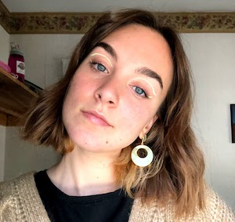

About Me
Emily Franke is a 22 year old Actor, Singer-Songwriter and creator from Elk Grove Village, IL. She will soon to be a graduate of Illinois State University with a B.S. in Acting. Emily is excited to be starting her post grad acting career in Illinois State University’s 2021 Acting Showcase in May 2021. Emily is working on part two of her EP, "The Summer That Stood Still: Reality" that is set to come out early next year. "The Summer That Stood Still: Dreamscape" released on September 22nd, 2020 and includes the single "Don't Call You". Emily considers this song her favorite song that she has produced. To date all of her music is self written, produced, recorded and released. She is eager to keep performing in the theatre and with her guitar in a post-covid world!
